Menu por menu, campo a campo, com exemplos de configuração e resultado esperado
Guia de consulta do Efettiva OS, tela por tela e campo por campo, com exemplos de preenchimento e do resultado esperado. Todas as imagens vêm do próprio sistema com dados fictícios (selo DEMO).
O Efettiva OS é o sistema interno da Efettiva Gestão. Uma única instalação atende várias empresas-clientes, cada uma totalmente isolada das demais. O consultor usa o sistema para diagnosticar, priorizar oportunidades, implantar processos, produzir playbooks e POPs e comprovar resultados.
Cada capítulo corresponde a um item do menu e segue sempre o mesmo roteiro: para que serve → tela → campos (com indicação de obrigatório) → exemplo → resultado esperado.
| Marca | Significado |
|---|---|
| * / “Obrig.: Sim” | Campo obrigatório. O sistema não grava sem ele. |
| DEMO | Dado fictício de demonstração. Nunca é misturado com dados reais. |
| [PENDENTE: …] | Lacuna em um documento gerado. Precisa ser confirmada com o cliente antes de aprovar. |
| Indisponível / n/d | O sistema não tem dado suficiente e prefere mostrar “sem dado” a inventar um número. |
| INTERNO × Cliente | Visibilidade de uma seção: INTERNO nunca sai no arquivo entregue ao cliente. |
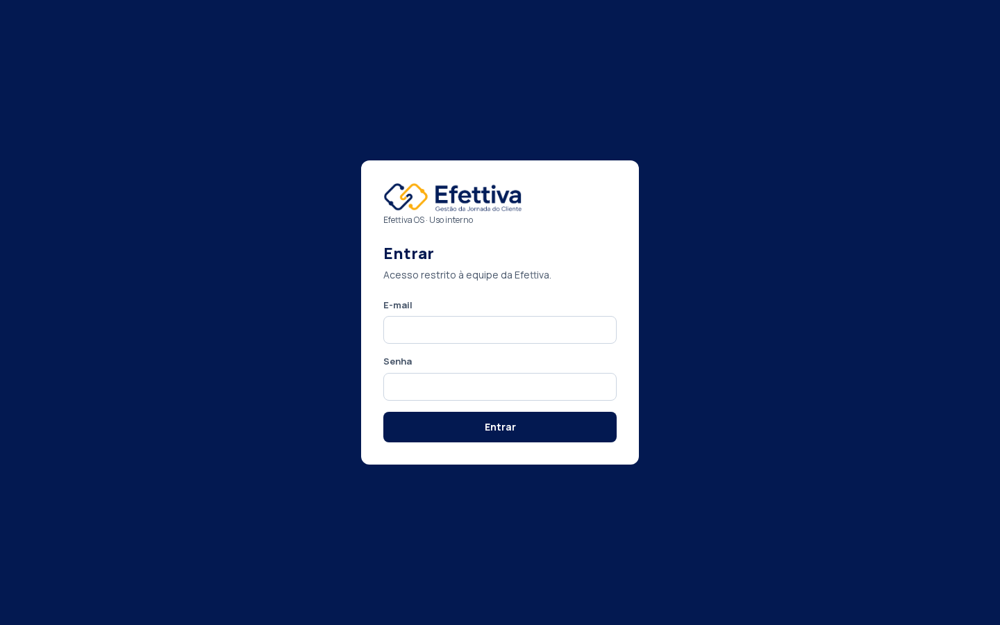
| Campo | Obrig. | O que faz e o que informar | Exemplo |
|---|---|---|---|
| Sim | E-mail do usuário interno cadastrado. | consultora@efettiva.com.br | |
| Senha | Sim | Senha pessoal (mínimo de 12 caracteres na criação do primeiro usuário). | •••••••••••• |
A barra lateral escura (azul-marinho) é o menu. No topo, a trilha de navegação (breadcrumb) mostra onde você está e permite voltar. No canto direito aparece o aviso de gravação (“✓ Salvo às 22:18”) quando a tela salva automaticamente.
| Item do menu | Onde fica | Para que serve |
|---|---|---|
| Visão geral | Menu principal | Painel com indicadores do dia, tarefas vencidas e processamentos. |
| Clientes | Menu principal | Lista, busca e cadastro de empresas-clientes. |
| Biblioteca de processos | Menu principal | Catálogo de 146 processos e fichas completas. |
| Configurações | Menu principal | Marca, método, regras do diagnóstico, parâmetros, IA, usuários, saúde e auditoria. |
| Cliente ativo (seletor) | Bloco abaixo do menu | Troca a empresa em que você está trabalhando. Aparece o selo DEMO nas empresas fictícias. |
| Visão 360°, Diagnósticos, Dados e importações, Oportunidades, Projetos, Documentos, Relatórios | Submenu do cliente ativo | Áreas de trabalho da empresa selecionada. Tudo que você vê ali pertence somente àquele cliente. |
Toda tela e os campos mais complexos têm ajuda embutida, sem precisar abrir esta apostila.
No canto superior direito do cabeçalho de cada tela há o botão Ajuda. Ele abre um quadro curto explicando para que serve a tela e, nas telas de fluxo, os passos recomendados. Clique fora do quadro ou pressione Esc para fechar.
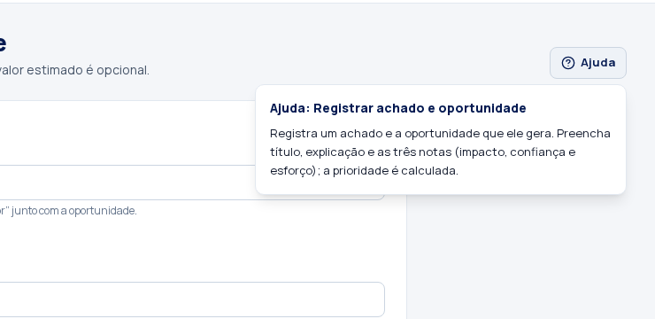
Ao lado do nome dos campos mais importantes ou complexos há um ícone ?. Ao clicar (ou ao focar com o teclado e pressionar Enter), abre um balão com o que o campo faz, um exemplo de preenchimento e, quando existe, uma observação sobre regras. Por exemplo, no campo Gatilho da ficha de processo:
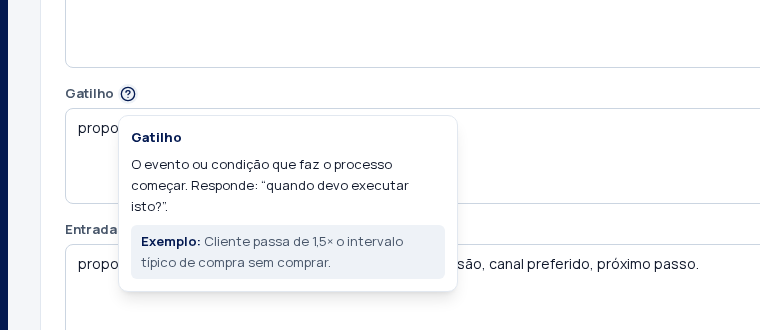
Primeira tela após o login. Mostra o que exige atenção hoje, sem somar valores de clientes diferentes.
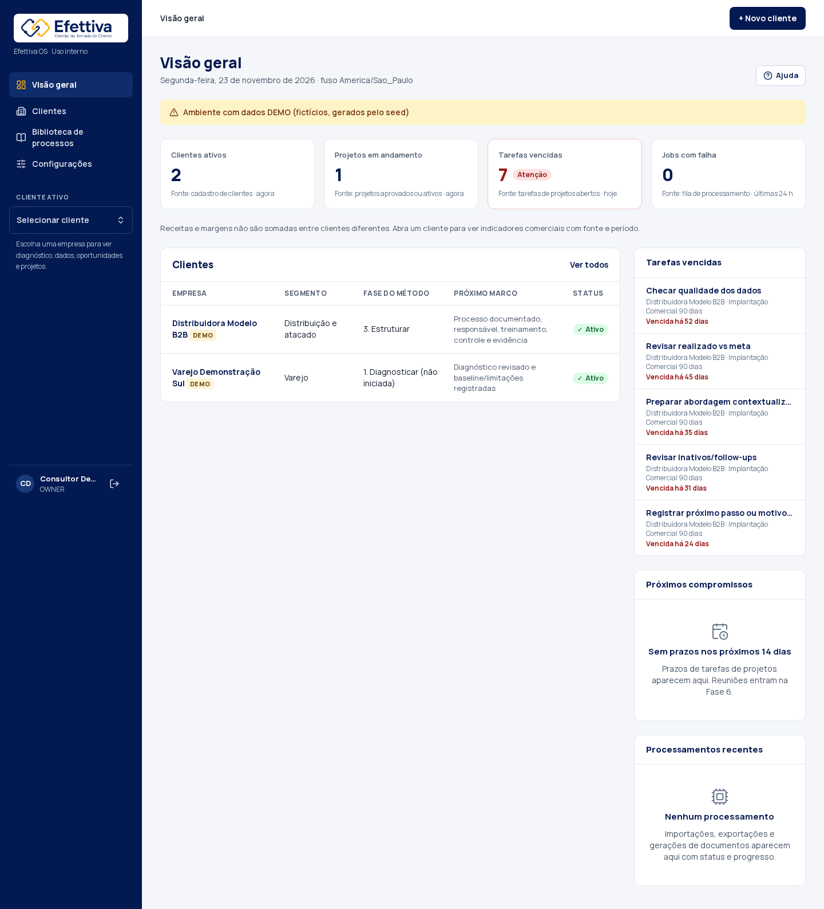
| Bloco | O que mostra | Fonte |
|---|---|---|
| Clientes ativos | Quantidade de clientes com status Ativo. | Cadastro de clientes |
| Projetos em andamento | Projetos aprovados ou ativos. | Projetos |
| Tarefas vencidas | Tarefas abertas com prazo no passado (destaque “Atenção”). | Tarefas de projetos abertos |
| Jobs com falha | Processamentos em segundo plano (importação, exportação, IA) que falharam nas últimas 24 h. | Fila de processamento |
| Tabela Clientes | Empresa, segmento, fase do método, próximo marco e status. Clique no nome para abrir a Visão 360°. | Cadastro e projetos |
| Tarefas vencidas / Próximos compromissos / Processamentos recentes | Listas curtas para agir rápido. | Tarefas, reuniões e fila |
O botão + Novo cliente (canto superior direito) é atalho para o cadastro.
Cadastro, busca e visão completa de cada empresa atendida.
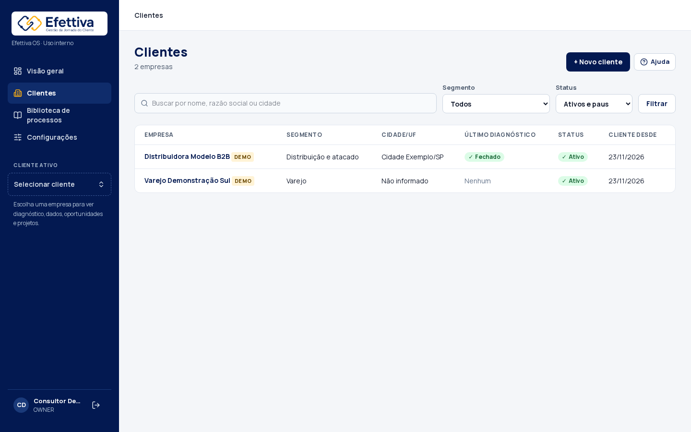
| Campo | Obrig. | O que faz e o que informar | Exemplo |
|---|---|---|---|
| Buscar por nome, razão social ou cidade | Não | Pesquisa parcial, sem diferenciar maiúsculas. | modelo, Campinas |
| Segmento | Não | Filtra pelo segmento: Distribuição e atacado; Indústria/fornecedor industrial B2B; Serviços B2B; Representantes e vendedores externos; Varejo; Contratos e receita recorrente; Outro. | Distribuição e atacado |
| Status | Não | Ativos e pausados (padrão), Ativo, Pausado ou Arquivado. | Arquivado |
| Botão Filtrar | — | Aplica os filtros. A lista é paginada. | — |
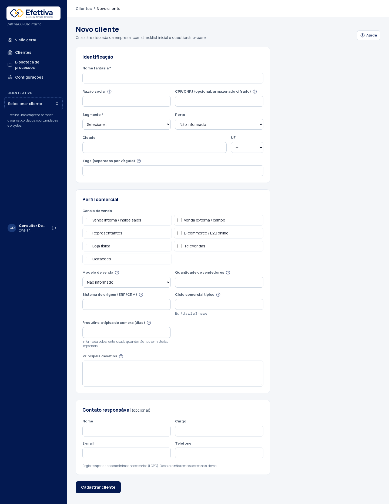
O formulário é dividido em três blocos. Só Nome fantasia e Segmento são obrigatórios; o restante enriquece o diagnóstico e os documentos.
| Campo | Obrig. | O que faz e o que informar | Exemplo |
|---|---|---|---|
| Nome fantasia * | Sim | Nome pelo qual a empresa é conhecida. Aparece em todo o sistema e nos documentos. | Distribuidora Modelo B2B |
| Razão social | Não | Nome jurídico. Usado na capa de documentos. | Distribuidora Modelo B2B Ltda |
| CPF/CNPJ | Não | Armazenado cifrado e exibido mascarado depois de salvo. Informe só se necessário. | 12.345.678/0001-90 |
| Segmento * | Sim | Define o perfil do questionário e as regras condicionais do diagnóstico. Escolha o que melhor descreve o modelo de negócio. | Distribuição e atacado |
| Porte | Não | Microempresa, Pequena, Média ou Grande. | Pequena |
| Cidade / UF | Não | Localização principal. | Campinas / SP |
| Tags (separadas por vírgula) | Não | Etiquetas livres para organizar e filtrar. | b2b, piloto-2026 |
| Campo | Obrig. | O que faz e o que informar | Exemplo |
|---|---|---|---|
| Canais de venda (caixas) | Não | Marque todos que existem: Venda interna/inside sales; Venda externa/campo; Representantes; E-commerce/B2B online; Loja física; Televendas; Licitações. | Venda externa + Televendas |
| Modelo de venda | Não | Transacional (recompra frequente); Consultiva (ciclo longo, proposta); Contrato/recorrência; Projeto sob demanda; Misto. | Consultiva |
| Quantidade de vendedores | Não | Número inteiro. Ajuda a dimensionar tarefas e treinamentos. | 4 |
| Sistema de origem (ERP/CRM) | Não | Sistema de onde vêm os dados. Será sugerido nas importações. | ERP Sankhya |
| Ciclo comercial típico | Não | Texto livre com o tempo entre primeiro contato e venda. | 15 a 30 dias |
| Frequência típica de compra (dias) | Não | Intervalo médio de recompra. Referência para o sinal de inatividade. | 30 |
| Principais desafios | Não | Dores relatadas pelo cliente, em texto livre. Entram no contexto do playbook. | Clientes deixam de comprar sem que ninguém perceba |
| Campo | Obrig. | O que faz e o que informar | Exemplo |
|---|---|---|---|
| Nome / Cargo / E-mail / Telefone | Não | Contato responsável inicial. Pode-se cadastrar mais contatos depois, na Visão 360°. | Marina Souza · Gerente comercial |
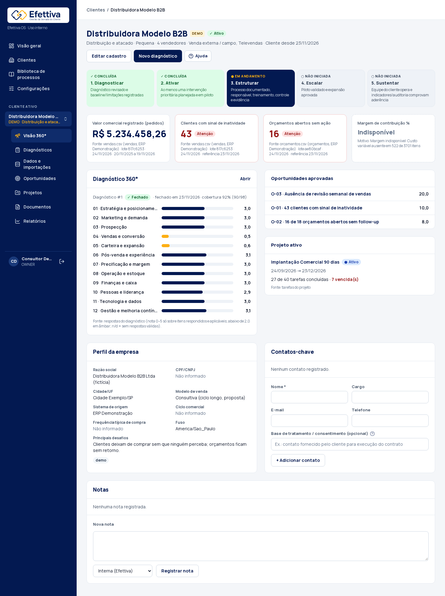
| Bloco | Como ler | O que fazer |
|---|---|---|
| Jornada do método (5 cartões) | 1 Diagnosticar · 2 Ativar · 3 Estruturar · 4 Escalar · 5 Sustentar. Cada cartão mostra o status (Concluída, Em andamento, Não iniciada) e o gate (critério mínimo de saída). | Use para saber em que fase o cliente está e o que falta para avançar. |
| Cartões de indicadores | Valor comercial, clientes com sinal de inatividade, orçamentos abertos sem ação, margem. Cada um mostra fonte, lote e período. Cartão tracejado = “Indisponível” com o motivo. | Clique em Dados e importações para corrigir a causa (ex.: custo ausente). |
| Diagnóstico 360° | Notas de 0 a 5 por área. Barra âmbar = nota abaixo de 2,0. “n/d” = sem respostas válidas. | Clique em Abrir para ver as respostas. |
| Oportunidades aprovadas | As melhores oportunidades com o score. | Abra o mapa para detalhar. |
| Projeto ativo | Progresso de tarefas e vencidas. | Entre no projeto para agir. |
| Perfil da empresa | Resumo dos dados do cadastro. | Atualize em Editar cadastro. |
Contatos-chave e Notas ficam no pé da página:
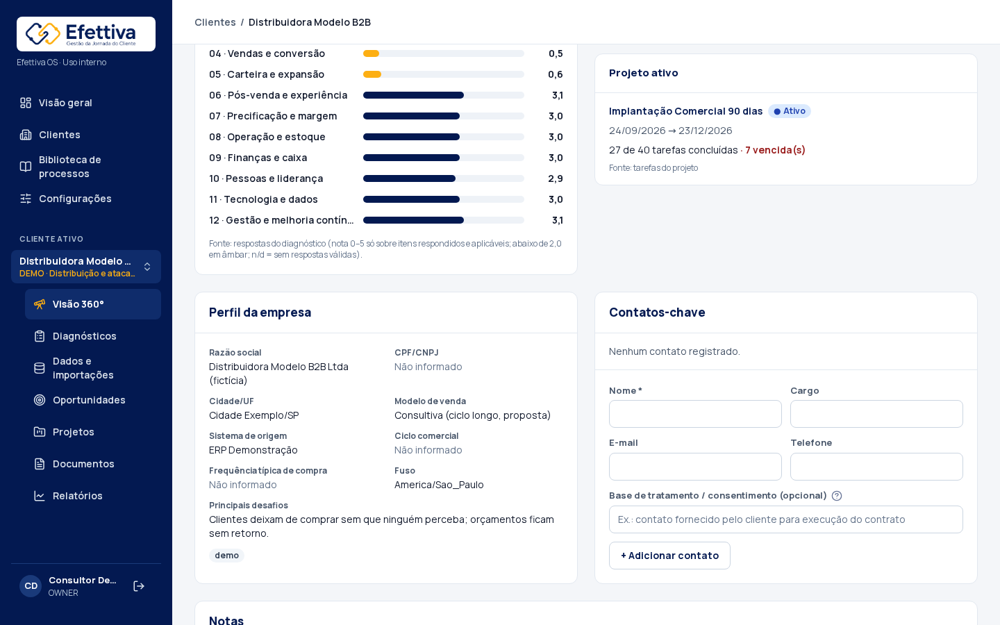
| Campo | Obrig. | O que faz e o que informar | Exemplo |
|---|---|---|---|
| Nome * | Sim | Nome do contato. | Marina Souza |
| Cargo / E-mail / Telefone | Não | Dados do contato. | Gerente comercial · marina@cliente.com |
| Base de tratamento / consentimento | Não | Registro LGPD: por que você pode ter esse dado. | Contato fornecido pelo cliente para execução do contrato |
| Nova nota * | Sim | Texto da nota sobre o cliente. | Cliente pediu priorizar a recuperação de inativos. |
| Visibilidade da nota | — | Interna (Efettiva): nunca sai para o cliente. Pode ir ao cliente: pode compor documentos. | Interna (Efettiva) |
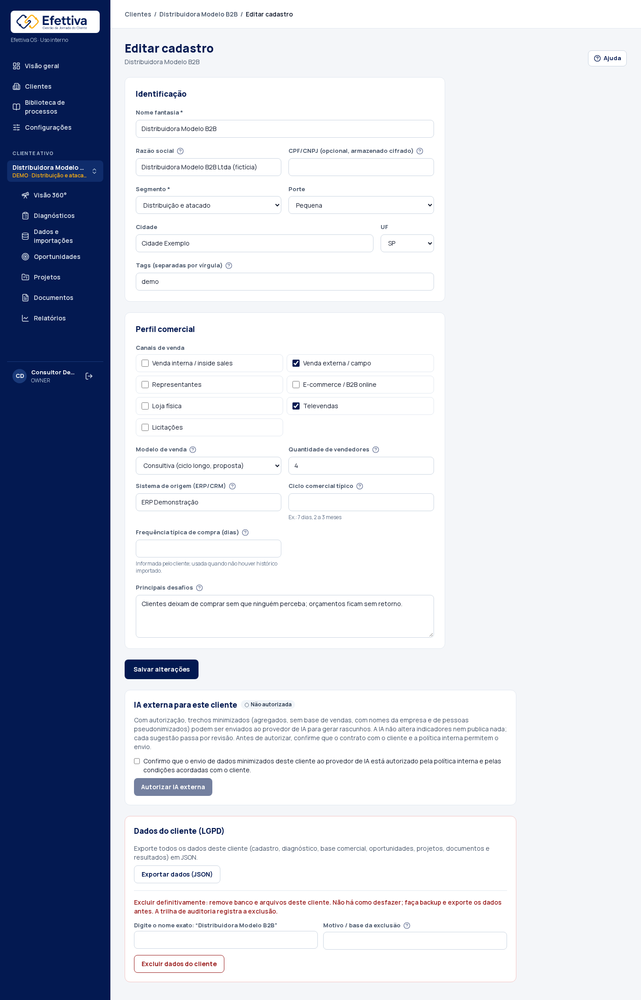
Traz os mesmos campos do cadastro e mais dois blocos, só para o perfil OWNER quando indicado:
| Campo | Obrig. | O que faz e o que informar | Exemplo |
|---|---|---|---|
| Salvar alterações | — | Grava o cadastro. Alterações ficam registradas na auditoria. | — |
| Autorizar IA externa | — | Caixa de confirmação: você afirma que o envio de dados minimizados deste cliente ao provedor de IA é permitido pela política interna e pelo acordo com o cliente. Sem isso, nenhuma IA é usada neste cliente. | Marcado após conferir o contrato |
| Dados do cliente (LGPD) · exportar | — | Gera um JSON completo com os dados do cliente (direito de acesso). | — |
| Excluir dados do cliente · nome exato | Sim | Digite o nome do cliente exatamente como cadastrado para liberar a exclusão. | Distribuidora Modelo B2B |
| Motivo / base da exclusão | Sim | Justificativa registrada na auditoria. | Encerramento de contrato, solicitação do titular em 10/11 |
Questionário 360° de 12 áreas, com respostas salvas automaticamente, score por área e achados que alimentam as oportunidades.
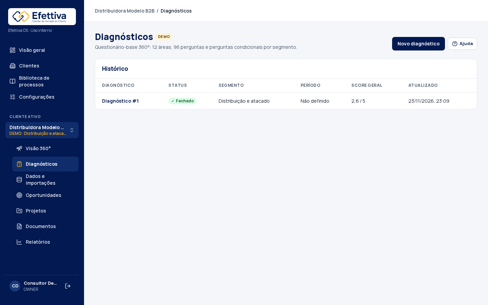
| Campo | Obrig. | O que faz e o que informar | Exemplo |
|---|---|---|---|
| Perfil de segmento | Sim | Escolhe o conjunto de perguntas e regras condicionais (algumas perguntas só aparecem para certos segmentos). Vem pré-selecionado com o segmento do cliente. | Distribuição e atacado |
| Período de referência — início | Não | Início do período a que as respostas se referem. | 01/01/2026 |
| Período de referência — fim | Não | Fim do período. | 30/09/2026 |
| Iniciar diagnóstico | — | Cria o diagnóstico em rascunho. | — |
| Campo | Obrig. | O que faz e o que informar | Exemplo |
|---|---|---|---|
| Resposta 0–5 | Sim* | *Obrigatória apenas para o score da pergunta. Escolha o nível que a empresa pratica hoje, não o que pretende. | 3 — Definido |
| Não sei / Não se aplica | — | Alternativas à nota. Não sei registra lacuna. | Não sei |
| Evidência | Não | Prova da resposta: arquivo, link ou texto. | https://drive…/politica-comercial.pdf |
| Nota / observação | Não | Contexto do consultor. | Metas existem só por vendedor, não por canal. |
| Informado por | Não | Pessoa que respondeu. | Marina Souza, Gerente comercial |
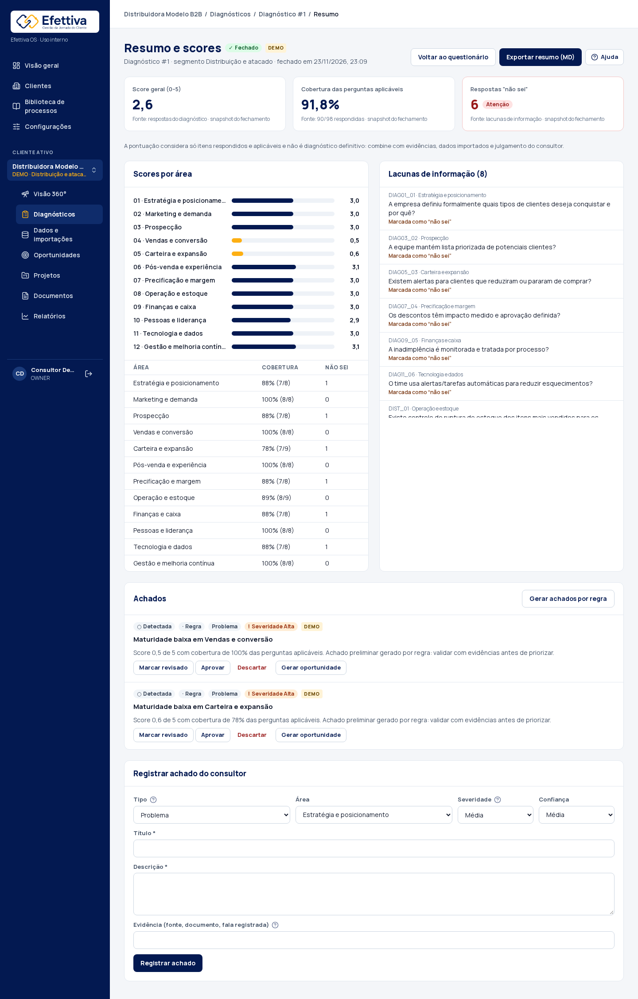
| Campo | Obrig. | O que faz e o que informar | Exemplo |
|---|---|---|---|
| Tipo | Sim | Problema, Oportunidade, Risco, Lacuna de dados ou Ponto forte. | Problema |
| Área | Sim | Uma das 12 áreas do diagnóstico. | Vendas e conversão |
| Severidade | Sim | Baixa, Média, Alta ou Crítica. | Alta |
| Confiança | Sim | Baixa, Média ou Alta: quão sustentada é a evidência. | Média |
| Título * | Sim | Frase curta e objetiva. | Propostas sem retorno após o envio |
| Descrição * | Sim | O que foi observado e por que importa. | 16 de 18 orçamentos abertos sem contato há mais de 15 dias. |
| Evidência (fonte, documento, fala registrada) | Não | Origem da afirmação. | orcamentos.csv, lote de 24/11 |
Traz os números reais do cliente (vendas, orçamentos, carteira) e calcula os indicadores com fonte e período.
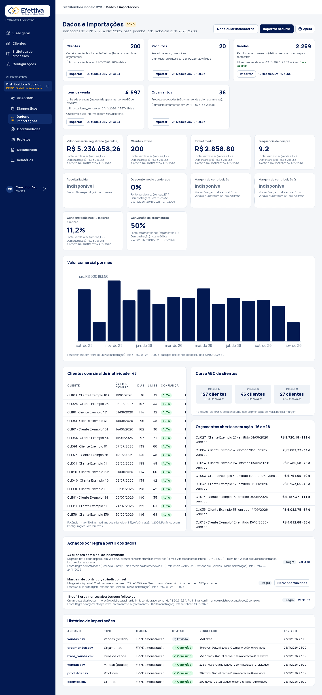
| Bloco | O que significa |
|---|---|
| Cartões por tipo (Clientes, Produtos, Vendas, Itens de venda, Orçamentos) | Quantidade importada, último lote, data e se a fonte foi validada. Cada cartão tem Importar, Modelo CSV e Modelo XLSX (arquivos-modelo para baixar). |
| Valor comercial por mês | Série mensal do valor registrado. |
| Clientes com sinal de inatividade | Clientes cujo intervalo desde a última compra passou do esperado (regra em Configurações → Parâmetros). |
| Curva ABC de clientes | Classe A (até 80% acumulado), B (até 95%) e C (restante), limites ajustáveis. |
| Orçamentos abertos sem ação | Propostas paradas além do prazo configurado. |
| Achados por regra a partir dos dados | Achados “DATA:*” gerados automaticamente (ex.: custo ausente). |
| Histórico de importações | Todos os lotes, com status e resultado. |
| Recalcular indicadores | Refaz os cálculos com os dados atuais. Útil depois de mudar parâmetros. |
Passos: Tipo → Arquivo → Mapeamento → Prévia e validação → Confirmação. A ordem recomendada de carga é: Clientes → Produtos → Vendas → Itens de venda → Orçamentos.
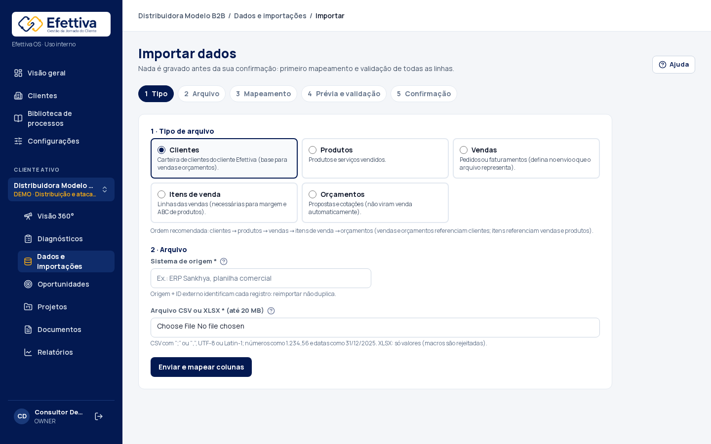
| Campo | Obrig. | O que faz e o que informar | Exemplo |
|---|---|---|---|
| Tipo de dado | Sim | Clientes, Produtos, Vendas, Itens de venda ou Orçamentos. | Produtos |
| Sistema de origem * | Sim | Nome do sistema que gerou o arquivo. Fica registrado como fonte dos indicadores. | ERP Sankhya |
| O que o arquivo de vendas representa | Sim (Vendas) | Para vendas, informe se são pedidos ou faturamento/notas. Muda o rótulo da base nos indicadores. | Pedidos |
| Arquivo CSV ou XLSX * (até 20 MB) | Sim | O limite pode ser alterado em Configurações → Parâmetros. XLSX com várias abas pede a escolha da aba. | produtos.csv |
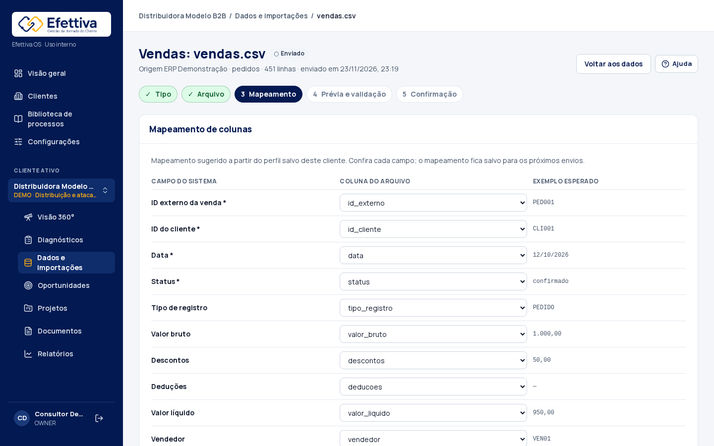
No mapeamento, para cada campo do sistema escolha a coluna do arquivo. O sistema sugere pelo nome e por sinônimos (ex.: “Cód” → ID externo); a sugestão é salva para os próximos envios. Campos com * são obrigatórios; sem eles o botão “Salvar mapeamento e validar” fica bloqueado e a mensagem lista o que falta.
| Tipo | Obrigatórios | Opcionais |
|---|---|---|
| Clientes | ID externo; Nome | Segmento; Vendedor; Intervalo de compra (dias); Ativo |
| Produtos | ID externo; Nome | SKU; Categoria; Ativo |
| Vendas | ID externo da venda; ID do cliente; Data; Status | Tipo de registro; Valor bruto; Descontos; Deduções; Valor líquido; Vendedor |
| Itens de venda | ID da venda; ID da linha; Quantidade; Preço unitário | ID do produto; Desconto; Custo variável unitário |
| Orçamentos | ID externo; ID do cliente; Data de emissão; Status; Valor | Data de validade; Vendedor; Último contato; Motivo de perda |
| Regra de formato | Exemplo aceito |
|---|---|
| Moeda no padrão brasileiro | 1.234,56 |
| Datas | 12/10/2026 (dd/mm/aaaa) |
| Booleano (Ativo) | sim / não |
| Status de venda | confirmado, faturado, entregue… (válida) · cancelado, estornado… (cancelada) · devolvido… (devolução). Status desconhecido vira erro: o sistema não adivinha. |
| Status de orçamento | aberto, em negociação… · ganho, aprovado… · perdido, recusado… · vencido, expirado |
Transforma achados em oportunidades priorizadas e as liga aos processos que resolvem cada uma.
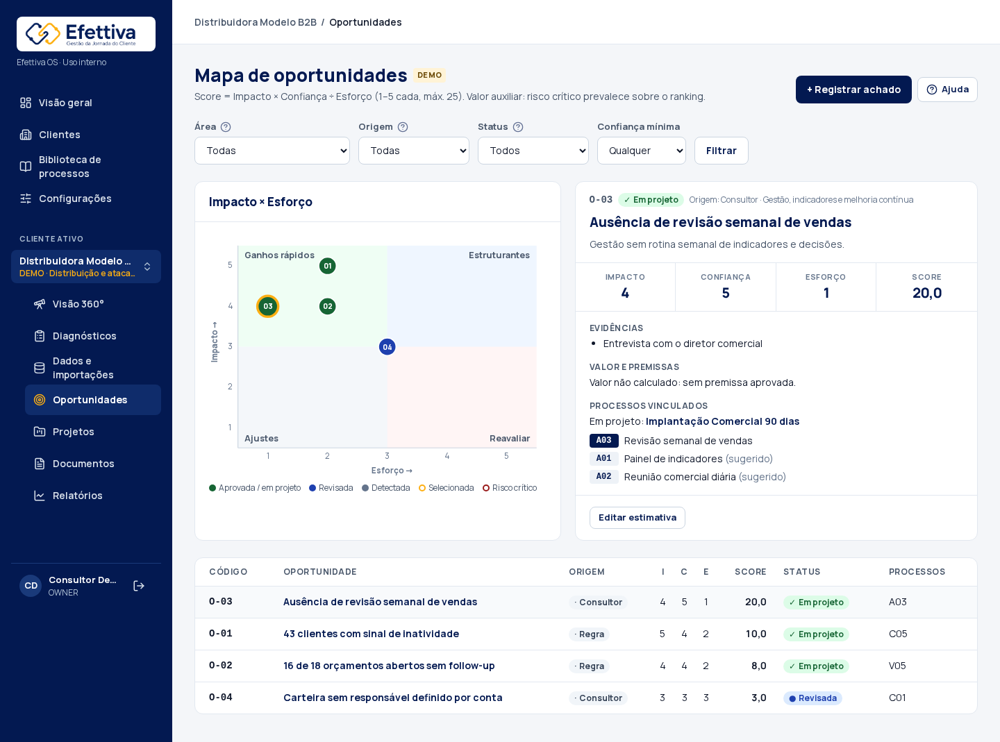
| Campo | Obrig. | O que faz e o que informar | Exemplo |
|---|---|---|---|
| Área | Não | Filtra pelas 14 áreas de processo (D, E, M, P, V, C, R, L, O, F, G, T, A, X). | C · Gestão da carteira |
| Origem | Não | Regra (automática), Consultor ou Sugestão IA. | Regra |
| Status | Não | Detectada → Revisada → Aprovada → Em projeto; ou Descartada. | Aprovada |
| Confiança mínima | Não | Qualquer, 3+, 4+ ou 5. | 4+ |
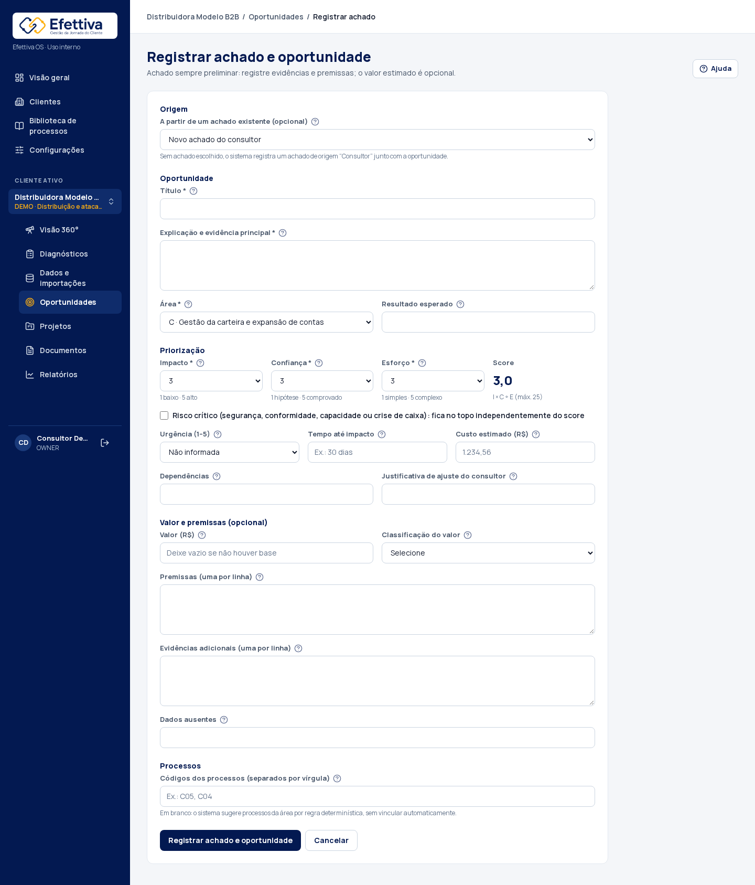
| Campo | Obrig. | O que faz e o que informar | Exemplo |
|---|---|---|---|
| A partir de um achado existente | Não | Escolha um achado do diagnóstico ou deixe “Novo achado do consultor” (o sistema cria o achado junto). | Maturidade baixa em Vendas e conversão |
| Título * | Sim | Nome curto da oportunidade. | Ausência de revisão semanal de vendas |
| Explicação e evidência principal * | Sim | O que acontece, com a evidência. | Sem reunião fixa; metas não são acompanhadas por vendedor. |
| Área * | Sim | Área de processo que resolve o tema. | A · Gestão e melhoria contínua |
| Resultado esperado | Não | Resultado de negócio buscado, sem prometer número. | Previsibilidade do funil |
| Impacto * | Sim | 1 baixo … 5 alto. | 4 |
| Confiança * | Sim | 1 hipótese … 5 comprovado. | 4 |
| Esforço * | Sim | 1 simples … 5 complexo. | 2 |
| Risco crítico | Não | Segurança, conformidade, capacidade ou crise de caixa. Fica no topo independentemente do score. | Desmarcado |
| Urgência (1–5) | Não | Pressão de tempo. | 3 |
| Tempo até impacto | Não | Prazo para o efeito aparecer. | 30 dias |
| Custo estimado (R$) | Não | Moeda no padrão brasileiro. | 1.234,56 |
| Dependências | Não | O que precisa existir antes. | Acesso ao ERP |
| Justificativa de ajuste do consultor | Não | Explique se alterou o score sugerido. | Subi o impacto por pedido do diretor |
| Valor (R$) + Classificação do valor | Não | Deixe vazio se não houver base. Classificar como Observado (dado real), Estimado (cálculo com premissas) ou Meta. | R$ 120.000,00 · Estimado |
| Premissas / Evidências adicionais | Não | Uma por linha. | Taxa de conversão de 30% |
| Dados ausentes | Não | O que falta para confirmar. | Custo variável dos itens |
| Códigos dos processos | Não | Separados por vírgula. Código inexistente é recusado. | A03, V05 |
O Score aparece ao vivo ao lado dos três seletores: Impacto × Confiança ÷ Esforço (máximo 25).
| Ação | Efeito |
|---|---|
| Marcar revisada / Aprovar / Descartar | Muda o status. Descartar pede motivo. |
| Adicionar processo (por código ou lista) | Vincula processos da biblioteca. O sistema também sugere processos por regra. |
| Vincular a projeto | Liga a oportunidade a um projeto em aberto (campo “Projeto em aberto”). |
| Criar projeto com esta oportunidade | Abre o cadastro de projeto já com a oportunidade vinculada. Status passa a Em projeto. |
Implantação dos processos priorizados, com plano 30/60/90, tarefas, indicadores, playbooks, reuniões e arquivos.
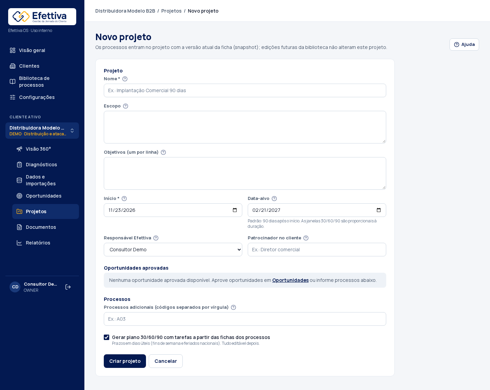
| Campo | Obrig. | O que faz e o que informar | Exemplo |
|---|---|---|---|
| Nome * | Sim | Nome do projeto. | Implantação Comercial 90 dias |
| Escopo | Não | O que está dentro e fora do projeto. | Processos de inativos, propostas e revisão semanal |
| Objetivos (um por linha) | Não | Resultados de negócio buscados. | Reativar clientes inativos↵Reduzir propostas sem retorno |
| Início * | Sim | Data de início. O baseline usa os 90 dias anteriores. | 24/09/2026 |
| Data-alvo | Não | Prazo final. Define as janelas 30/60/90. | 23/12/2026 |
| Responsável Efettiva | Não | Consultor responsável. | Consultora Demonstração |
| Patrocinador no cliente | Não | Quem decide no cliente. | Diretor comercial |
| Processos adicionais (códigos) | Não | Além dos vindos das oportunidades. | A03 |
| Gerar plano 30/60/90 com tarefas | — | Marcado: cria o cronograma e as tarefas a partir das fichas dos processos. Prazos em dias úteis (fins de semana e feriados nacionais ficam de fora). Tudo editável depois. | Marcado |
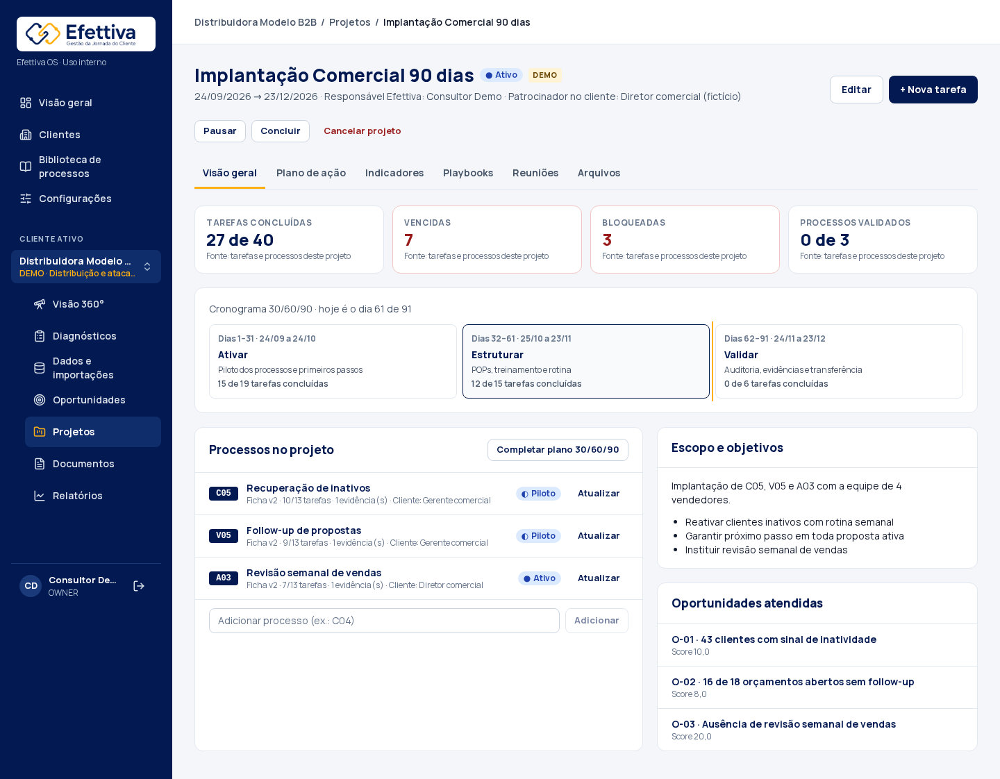
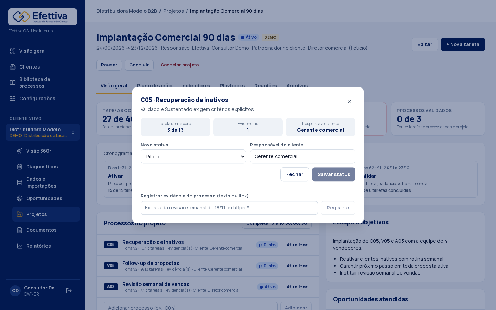
| Campo | Obrig. | O que faz e o que informar | Exemplo |
|---|---|---|---|
| Código do processo (adicionar) | — | Inclui outro processo da biblioteca no projeto. | C04 |
| Novo status | Sim | Planejado → Em andamento → Piloto → Ativo → Validado → Sustentado. Também Bloqueado e Cancelado. | Piloto |
| Responsável do cliente | Não | Quem mantém a rotina no cliente. | Gerente comercial |
| Resultado dos indicadores * | Sim (Validado) | Resumo do que os indicadores mostraram. | Retorno em 7 dias passou de 40% para 65% |
| Data da auditoria * / Resultado da auditoria * | Sim (Sustentado) | Auditoria posterior à validação. | 18/12/2026 · 9 de 10 conformes |
| Motivo * | Sim (Bloqueado/Cancelado) | Justificativa. | Aguardando exportação do ERP |
| Evidência do processo (texto ou link) | Não | Prova da execução. Pelo menos uma é exigida para Validado. | Ata da revisão de 18/11 |
| Status | Critério exigido pelo sistema |
|---|---|
| Validado | Todas as tarefas vinculadas concluídas + indicadores verificados + ao menos uma evidência. |
| Sustentado | Validado + responsável do cliente treinado + auditoria posterior à validação. |
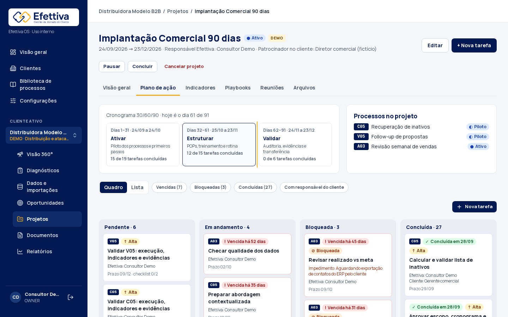
Alterne entre Quadro (colunas Pendente · Em andamento · Bloqueada · Concluída) e Lista. Filtros rápidos: vencidas, bloqueadas, concluídas e responsável do cliente.
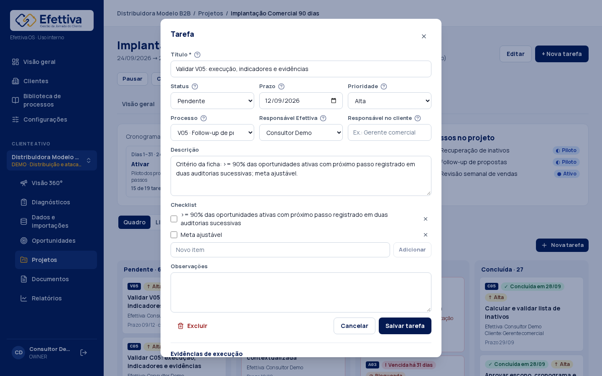
| Campo | Obrig. | O que faz e o que informar | Exemplo |
|---|---|---|---|
| Título * | Sim | O que deve ser feito, no infinitivo. | Validar V05: execução, indicadores e evidências |
| Status | Não | Pendente, Em andamento, Bloqueada ou Concluída. | Em andamento |
| Prazo | Não | Data limite. Passou do prazo e aberta = “Vencida há N dias”. | 09/12/2026 |
| Prioridade | Não | Baixa, Média, Alta ou Crítica. | Alta |
| Impedimento * | Sim (Bloqueada) | Aparece ao marcar Bloqueada: diga o que impede. | Aguardando exportação de contatos do ERP |
| Processo | Não | Processo ao qual a tarefa pertence ou “Geral do projeto”. | A03 · Revisão semanal |
| Responsável Efettiva | Não | Consultor. | Consultora Demonstração |
| Responsável no cliente | Não | Papel ou nome do cliente. | Gerente comercial |
| Descrição | Não | Detalhes e instruções. | Passo 2 de 10 da ficha A03 |
| Checklist | Não | Itens simples. Adicionar inclui o item. | Distribuir relatório |
| Observações | Não | Notas livres. | — |
| Evidências de execução | Não | Texto, link ou arquivo que prova a execução. | https://… ou planilha anexada |
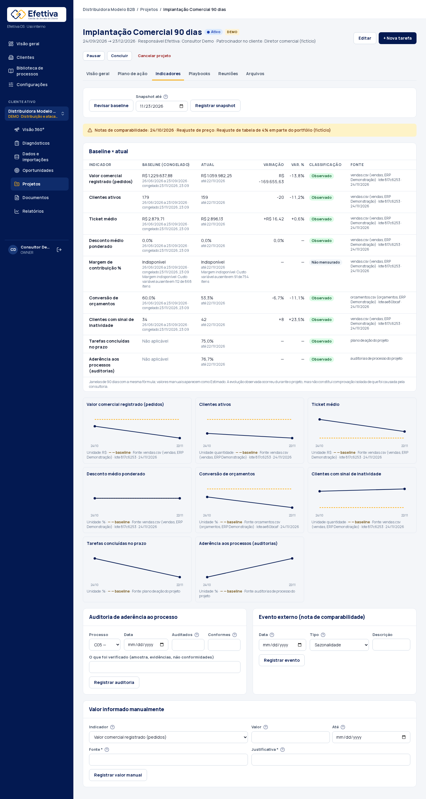
Compara a janela de 90 dias anterior ao início (baseline congelado, imutável) com os números atuais, usando a mesma fórmula e a mesma fonte. A coluna Classificação diz se o número é Observado, Estimado ou Não mensurado.
| Campo | Obrig. | O que faz e o que informar | Exemplo |
|---|---|---|---|
| Revisar baseline | — | Corrige o baseline criando nova versão com justificativa; o original não é apagado. | — |
| Snapshot até | Sim | Data-limite do recorte atual. Registrar snapshot calcula e guarda os indicadores até essa data. | 23/11/2026 |
| Auditoria: Processo | Sim | Processo auditado. | V05 — Follow-up de propostas |
| Data | Sim | Data da auditoria. | 20/11/2026 |
| Auditados | Sim | Quantos casos foram verificados. | 10 |
| Conformes | Sim | Quantos seguiram o processo (≤ auditados). | 8 |
| O que foi verificado | Não | Amostra, evidências, não conformidades. | 10 propostas de novembro; 2 sem próximo passo |
| Evento: Data / Tipo / Descrição | Sim | Nota de comparabilidade: Sazonalidade, Reajuste de preço, Mudança de portfólio, Mudança na equipe, Campanha paralela, Mercado/concorrência ou Outro. | 24/10 · Reajuste de preço · Reajuste de 4% |
| Valor manual: Indicador / Valor / Até | Sim | Informar um número que não vem de importação. | Ticket médio · 2.950,00 · 23/11/2026 |
| Fonte * e Justificativa * | Sim | Obrigatórias. O valor aparece como Estimado. | Planilha do cliente · ERP fora do ar |
| Aba | O que contém |
|---|---|
| Playbooks | Documentos do projeto (playbooks e relatórios) com status e versão. Botão Gerar documento (ver capítulo Documentos). |
| Reuniões | Registro de reuniões e histórico por semana. |
| Arquivos | Evidências e anexos do projeto, por processo. |
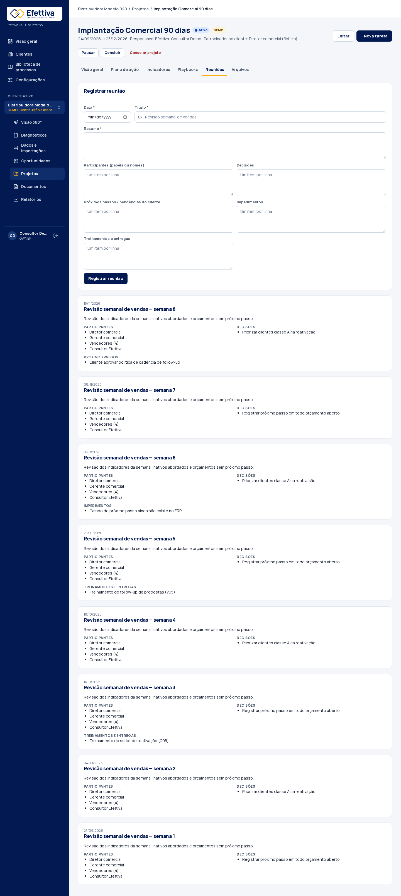
| Campo | Obrig. | O que faz e o que informar | Exemplo |
|---|---|---|---|
| Data * | Sim | Data da reunião. | 18/11/2026 |
| Título * | Sim | Assunto. | Revisão semanal de vendas |
| Resumo * | Sim | O que foi discutido. | Funil revisado; 3 propostas sem retorno. |
| Participantes | Não | Um por linha. | Gerente comercial↵Consultora |
| Decisões | Não | Um por linha. | Retornar às propostas até sexta |
| Próximos passos / pendências do cliente | Não | Um por linha. | Enviar lista de inativos |
| Impedimentos | Não | Um por linha. | Acesso ao ERP |
| Treinamentos e entregas | Não | Um por linha. | Treinamento do POP V05 |
Gera, edita, revisa, aprova e exporta o material entregue ao cliente. A geração funciona sem IA.
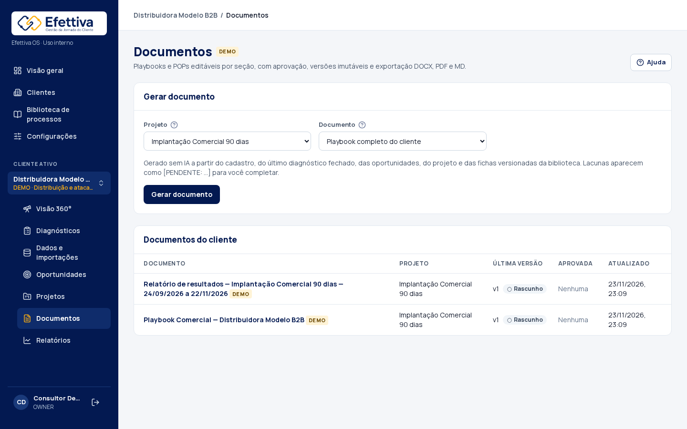
| Campo | Obrig. | O que faz e o que informar | Exemplo |
|---|---|---|---|
| Projeto | Sim | Projeto de origem do conteúdo. | Implantação Comercial 90 dias |
| Documento | Sim | Playbook completo do cliente (20 seções) ou POP de um processo avulso. | Playbook completo do cliente |
| Processo (POP) | Sim (POP) | Aparece ao escolher POP. | V05 |
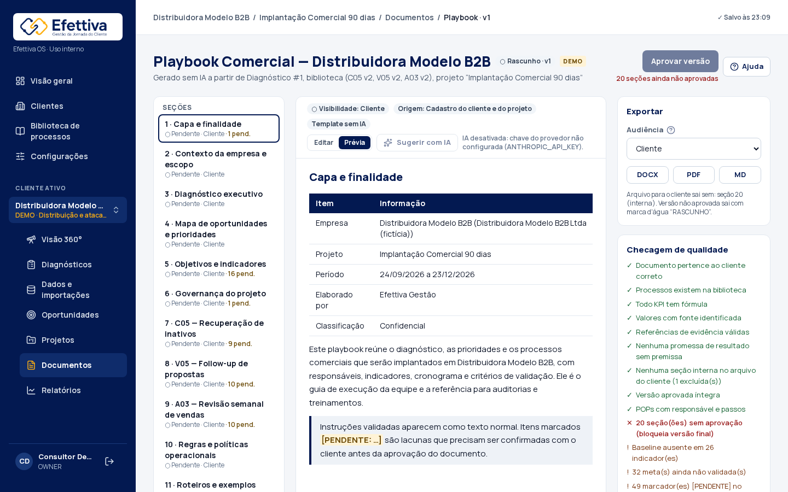
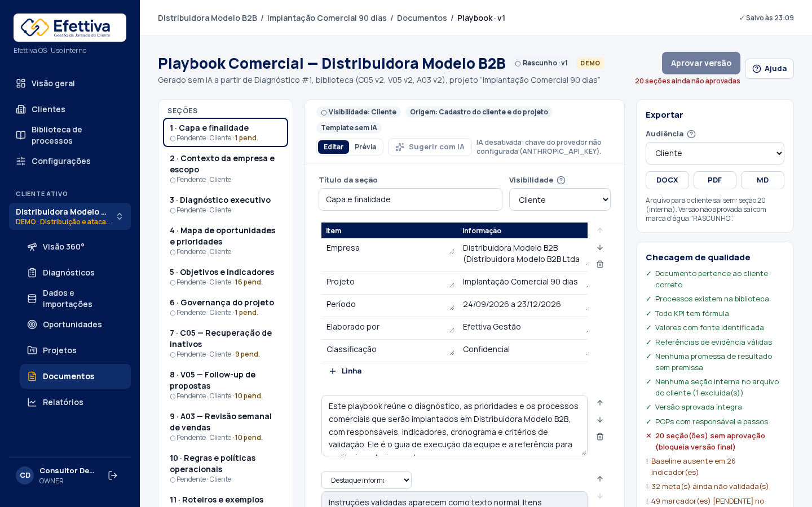
| Campo | Obrig. | O que faz e o que informar | Exemplo |
|---|---|---|---|
| Título da seção | Sim | Título exibido no documento. | Capa e finalidade |
| Visibilidade | Sim | Cliente sai no arquivo do cliente. INTERNO só no arquivo interno. | INTERNO (para estratégia de negociação) |
| Cabeçalhos e linhas de tabela | Não | Células de tabelas da seção. | Empresa | Distribuidora Modelo B2B |
| Subtítulo / Parágrafo / Lista | Não | Blocos de texto. Para listas, um item por linha. | — |
| Tipo de destaque + Texto do destaque | Não | Caixa informativa ou de atenção. | Atenção: validar metas com o diretor |
| Marcador [PENDENTE: …] | — | Substitua pelo texto confirmado com o cliente. | — |
| Campo | Obrig. | O que faz e o que informar | Exemplo |
|---|---|---|---|
| Audiência | Sim | Cliente (sem seções INTERNO) ou Interno Efettiva (completo). O filtro é aplicado no servidor. | Cliente |
| DOCX / PDF / MD | — | Gera o arquivo em segundo plano. Versão não aprovada sai com marca d’água “RASCUNHO”. | |
| Aprovar versão | — | Só habilita quando todas as seções estão aprovadas e a checagem não tem erro. Cria versão imutável. | — |
| Comparar versões | — | Exibe diferenças entre versões (ex.: v1 → v2). | — |
A Checagem de qualidade bloqueia a aprovação quando há: documento de outro cliente, processo inexistente, KPI sem fórmula, valor sem fonte, evidência inválida, promessa de resultado, conteúdo INTERNO no arquivo do cliente ou POP sem responsável/passos. Itens com “!” são alertas que não bloqueiam (ex.: baseline ausente).
O botão Sugerir com IA só funciona com IA habilitada, chave configurada e autorização do cliente. Sem isso o botão fica desativado com a explicação (“chave do provedor não configurada”) e todo o resto segue funcionando.
| Campo | Obrig. | O que faz e o que informar | Exemplo |
|---|---|---|---|
| Seções (até 8) | Sim | Quais seções receberão rascunho. | 5 · Objetivos e indicadores |
| Orientação para a IA | Não | Instrução curta de tom ou foco. | Priorizar execução simples para equipe de quatro vendedores |
| Enviar valores financeiros agregados (R$) | Não | Desmarcado: valores saem como “[valor omitido]”. Nomes de empresa e pessoas são sempre pseudonimizados. | Desmarcado |
| Aceitar / Editar / Rejeitar | — | A IA só gera rascunho. Nada é publicado ou alterado sem sua decisão. O aceite é bloqueado se houver evidência inexistente. Rejeitar aceita motivo opcional. | Aceitar com edição |
Relatório periódico com baseline × atual, fonte, limitações e cronograma.
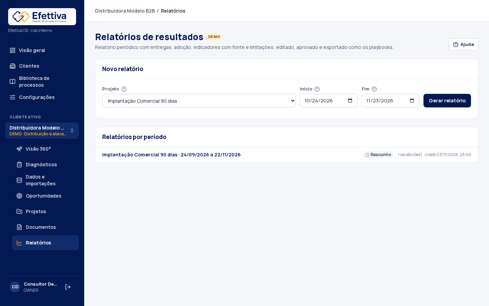
| Campo | Obrig. | O que faz e o que informar | Exemplo |
|---|---|---|---|
| Projeto | Sim | Projeto a reportar. | Implantação Comercial 90 dias |
| Início | Sim | Início do período do relatório. | 24/09/2026 |
| Fim | Sim | Fim do período. | 22/11/2026 |
| Gerar relatório | — | Cria o relatório (11 seções) como documento editável e exportável. | — |
Catálogo de 146 processos comerciais, com 10 fichas completas (gatilho, passos, KPIs, controles e critério de validação).
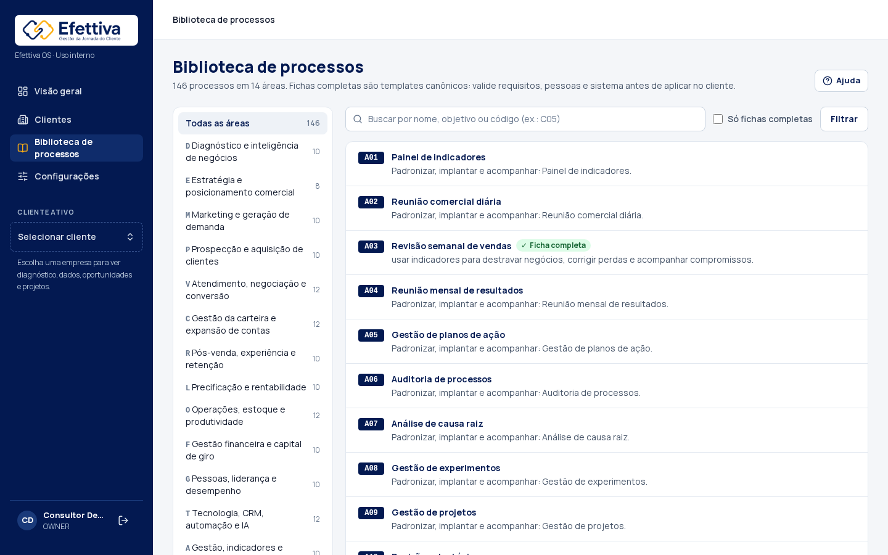
| Campo | Obrig. | O que faz e o que informar | Exemplo |
|---|---|---|---|
| Buscar processo | Não | Por nome, objetivo ou código. | C05 |
| Só fichas completas | Não | Mostra apenas processos com ficha detalhada. | Marcado |
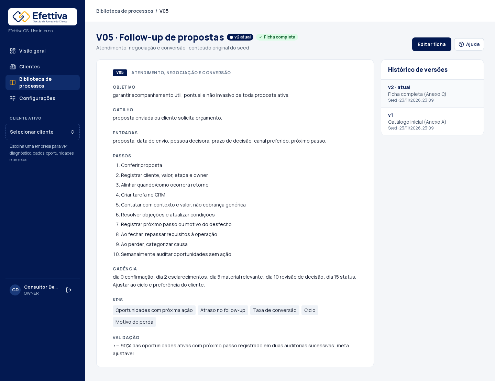
A ficha mostra a versão atual e o histórico (?v=N). Clique em Editar para ajustar o texto padrão.
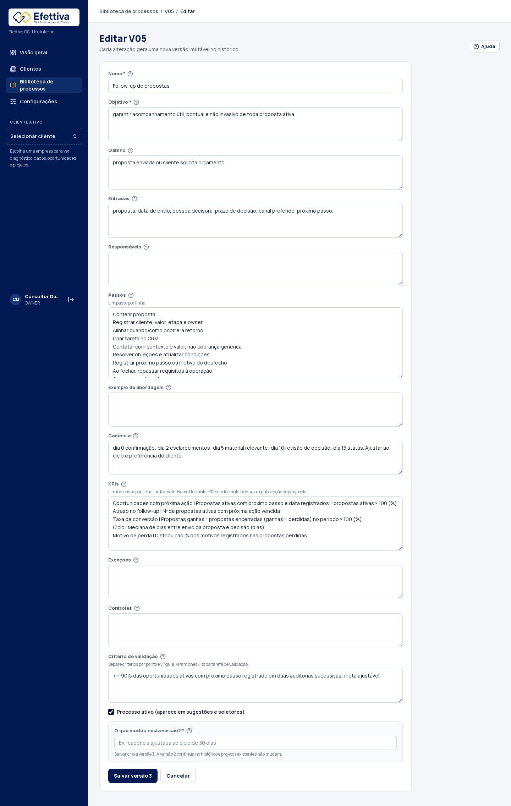
| Campo | Obrig. | O que faz e o que informar | Exemplo |
|---|---|---|---|
| Nome * | Sim | Nome do processo. | Recuperação de inativos |
| Objetivo * | Sim | Para que o processo existe. | Reativar clientes que pararam de comprar |
| Gatilho | Não | O que dispara o processo. | Cliente passa de 1,5× o intervalo típico |
| Entradas | Não | O que precisa existir para começar. | Lista de inativos |
| Responsáveis | Não | Papéis. | Vendedor; gerente |
| Passos | Não | Um por linha. Viram tarefas do plano. | Contatar por telefone↵Registrar retorno |
| Exemplo de abordagem | Não | Roteiro sugerido. | Olá, notei que… |
| Cadência | Não | Frequência. | Semanal |
| KPIs | Não* | Um por linha: Nome | fórmula. KPI sem fórmula bloqueia a aprovação do playbook. | Taxa de reativação | reativados ÷ contatados |
| Exceções / Controles | Não | Casos fora do padrão e verificações. | Cliente em disputa judicial |
| Critério de validação | Não | Separe com ponto e vírgula; vira checklist da tarefa de validação. | 10 contatos feitos; 3 reativações |
| O que mudou nesta versão? * | Sim | Descreve a alteração. | Cadência ajustada ao ciclo de 30 dias |
Abas: Marca · Fases do método e escala · Regras do diagnóstico · Parâmetros · Provedor de IA · Usuários · Backups e saúde · Auditoria. Alterações exigem perfil OWNER; demais perfis só leem.
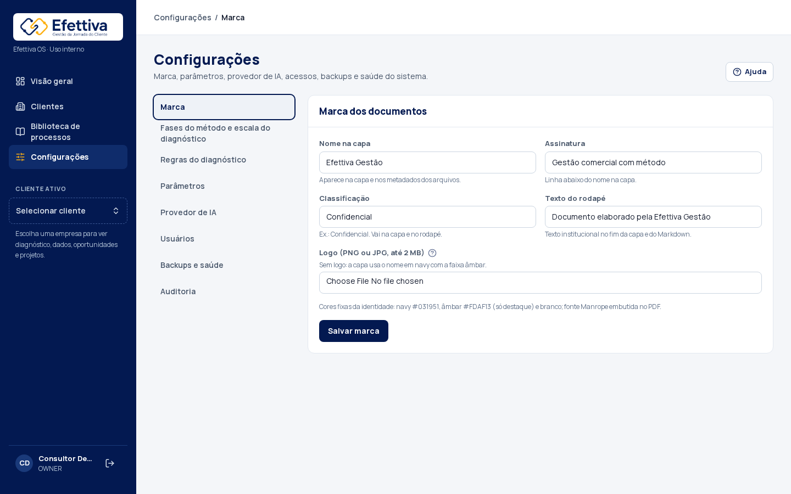
| Campo | Obrig. | O que faz e o que informar | Exemplo |
|---|---|---|---|
| Nome na capa | Não | Aparece na capa e nos metadados dos arquivos. | Efettiva Gestão |
| Assinatura | Não | Linha abaixo do nome na capa. | Consultoria comercial |
| Classificação | Não | Vai na capa e no rodapé. | Confidencial |
| Texto do rodapé | Não | Texto institucional no fim da capa e do Markdown. | Documento de uso exclusivo do cliente |
| Logo (PNG ou JPG, até 2 MB) | Não | Validado antes de gravar. Aparece em DOCX e PDF. | logo-efettiva.png |
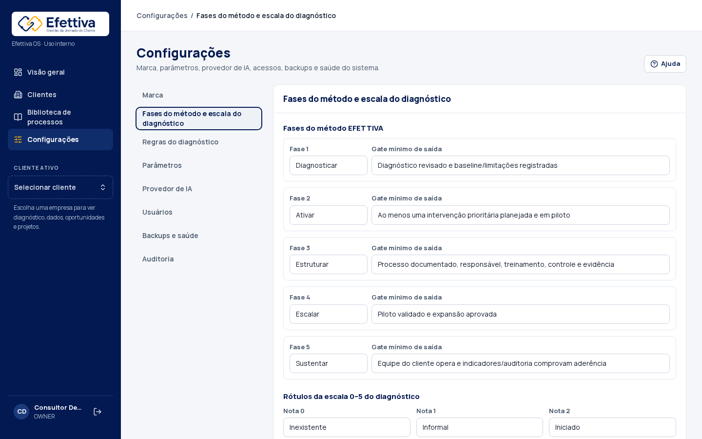
| Campo | Obrig. | O que faz e o que informar | Exemplo |
|---|---|---|---|
| Fase 1 a Fase 5 (nome) | Sim | Nome de cada fase exibido na jornada. | 1. Diagnosticar |
| Gate mínimo de saída | Sim | Critério para considerar a fase concluída. | Diagnóstico revisado e baseline/limitações registradas |
| Nota 0 a Nota 5 | Sim | Rótulos da escala do questionário. | 0 Inexistente … 5 Otimizado |
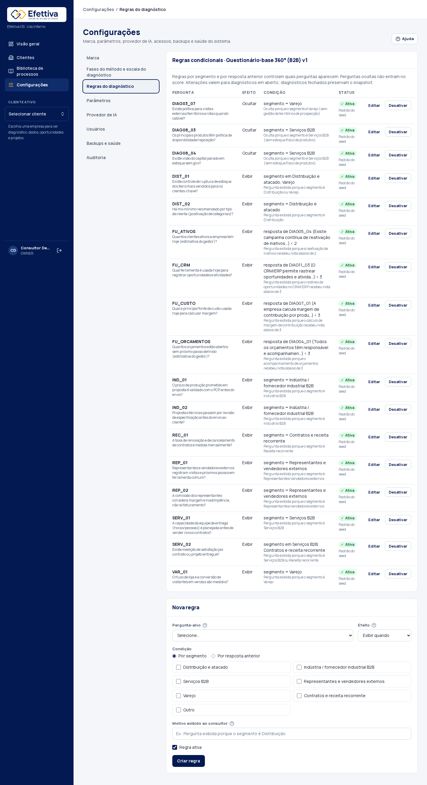
Controlam quando uma pergunta aparece ou some. Cada regra tem Editar e Desativar.
| Campo | Obrig. | O que faz e o que informar | Exemplo |
|---|---|---|---|
| Pergunta-alvo * | Sim | Pergunta que a regra controla. | DIAG05_03 |
| Efeito | Sim | Exibir quando / Ocultar quando. | Exibir quando |
| Por segmento / Por resposta anterior | Sim | Tipo de condição. Segmento: marque os segmentos. Resposta anterior: escolha pergunta e valor. | Por segmento: Distribuição |
| Motivo exibido ao consultor * | Sim | Explica por que a pergunta aparece. | Pergunta exibida porque o segmento é Distribuição |
| Regra ativa | Não | Liga/desliga sem apagar. | Marcado |
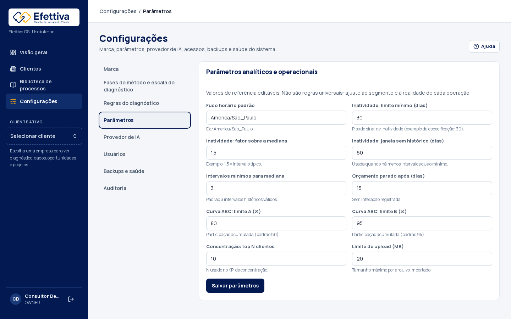
| Campo | Obrig. | O que faz e o que informar | Exemplo |
|---|---|---|---|
| Fuso horário padrão | Sim | Base para datas e relatórios. | America/Sao_Paulo |
| Inatividade: limite mínimo (dias) | Sim | Piso do sinal de inatividade (referência: 30). | 30 |
| Inatividade: fator sobre a mediana | Sim | Quantas vezes o intervalo típico do cliente é tolerado (referência: 1,5). | 1,5 |
| Inatividade: janela sem histórico (dias) | Sim | Usada quando há poucos intervalos. | 90 |
| Intervalos mínimos para mediana | Sim | Padrão 3 intervalos históricos válidos. | 3 |
| Orçamento parado após (dias) | Sim | Sem interação registrada. | 15 |
| Curva ABC: limite A / B (%) | Sim | Participação acumulada (padrão 80 e 95). | 80 / 95 |
| Concentração: top N clientes | Sim | N do KPI de concentração. | 10 |
| Limite de upload (MB) | Sim | Tamanho máximo por arquivo importado. | 20 |
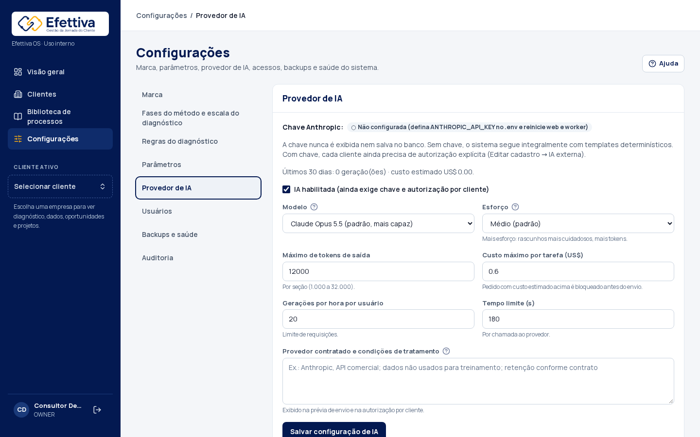
| Campo | Obrig. | O que faz e o que informar | Exemplo |
|---|---|---|---|
| IA habilitada | Não | Liga o recurso. Ainda exige chave no ambiente (ANTHROPIC_API_KEY) e autorização por cliente. A chave nunca fica no banco. | Desmarcado até contratar |
| Modelo | Sim | Claude Opus 5.5 (padrão, mais capaz), Sonnet 5.5 (mais econômico) ou Haiku 5.5 (mais rápido). | Sonnet 5.5 |
| Esforço | Sim | Baixo, Médio (padrão) ou Alto. | Médio |
| Máximo de tokens de saída | Sim | Limite do tamanho da resposta. | 8000 |
| Custo máximo por tarefa (US$) | Sim | Trava de custo por pedido. | 1,00 |
| Gerações por hora por usuário | Sim | Limite de uso. | 20 |
| Tempo limite (s) | Sim | Tempo máximo de espera. | 120 |
| Provedor contratado e condições de tratamento | Sim | Registro de conformidade. | Anthropic, API comercial; dados não usados para treinamento |
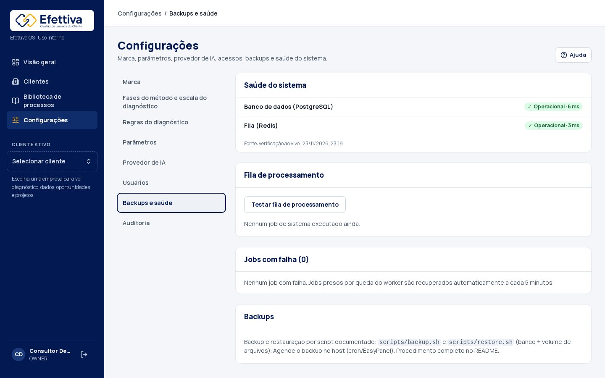
| Aba | O que faz |
|---|---|
| Usuários | Lista usuários internos (nome, e-mail, perfil, último acesso). O primeiro OWNER vem da instalação; convites e múltiplos usuários são uma evolução prevista. |
| Backups e saúde | Estado do banco e da fila, Testar fila de processamento, jobs com falha (com Tentar de novo; só OWNER vê nomes de clientes) e instruções de backup (scripts/backup.sh e restore.sh). Jobs presos são recuperados automaticamente a cada 5 minutos. |
| Auditoria (OWNER) | Trilha com Quando, Quem, Ação, Cliente e Registro. Filtro por tipo de ação (Acesso, Clientes, Diagnósticos, Oportunidades, Projetos, Tarefas, Documentos, Importações, Baseline, IA, Arquivos, Configurações, Jobs) e paginação. |
Roteiro resumido para treinar com o cliente fictício.
| Termo | Significado |
|---|---|
| Achado | Constatação do diagnóstico ou dos dados (problema, risco, oportunidade, ponto forte, lacuna). |
| Baseline | Retrato dos indicadores nos 90 dias anteriores ao início do projeto, congelado e imutável. |
| Snapshot | Retrato dos indicadores em uma data, guardado para comparação. |
| Gate | Critério mínimo para encerrar uma fase do método. |
| POP | Procedimento operacional padrão de um processo. |
| Playbook | Documento que reúne diagnóstico, prioridades, processos, KPIs e cronograma. |
| Score de prioridade | Impacto × Confiança ÷ Esforço (máximo 25). |
| Observado / Estimado / Meta | Classificação do valor: dado real, cálculo com premissas ou objetivo. |
| Lote | Um arquivo importado, com status e resultado. |
| Job | Tarefa em segundo plano (importar, exportar, IA). |
| Sintoma | Causa provável | O que fazer |
|---|---|---|
| Botão “Aprovar versão” desativado | Há seções não aprovadas ou erro na checagem de qualidade. | Aprove cada seção e corrija os itens com ✕ na checagem. |
| Indicador “Indisponível” | Falta dado (ex.: custo variável) ou período curto. | Leia o motivo no cartão e complete a importação. |
| “Salvar mapeamento” bloqueado | Campo obrigatório sem coluna. | Mapeie os campos marcados com *. |
| Importação rejeitou linhas | Status desconhecido, data ou moeda fora do formato. | Baixe o CSV de erros, corrija e reenvie (não duplica). |
| “Sugerir com IA” desativado | IA desligada, sem chave ou sem autorização do cliente. | Configurações → IA e Editar cadastro → Autorizar IA externa. |
| Exportação demora ou falha | Worker parado ou job com falha. | Backups e saúde → Testar fila; use Tentar de novo. |
| Acesso bloqueado ao entrar | 5 tentativas erradas. | Aguarde 15 minutos. |
| Cliente “não encontrado” | Sem permissão ou ID de outro cliente. | Volte pelo seletor de cliente. |